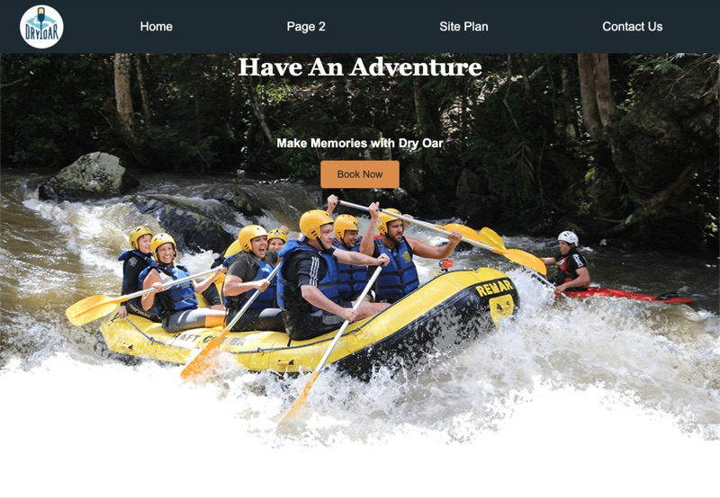
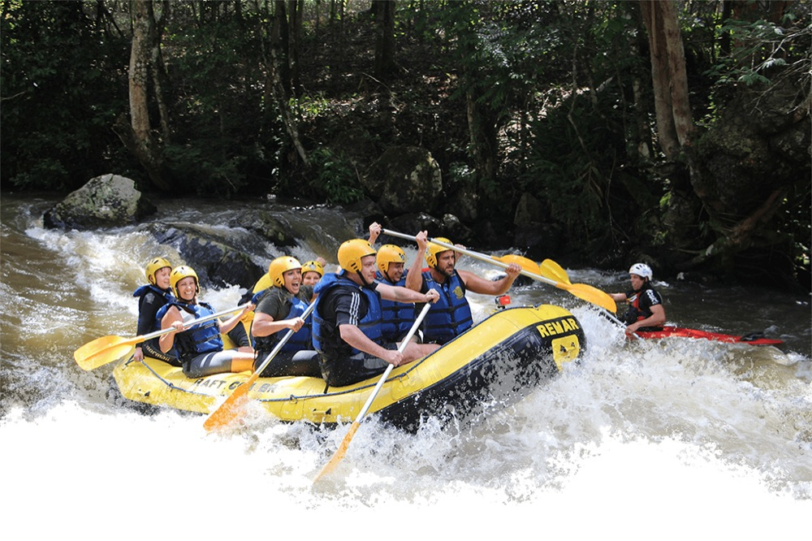
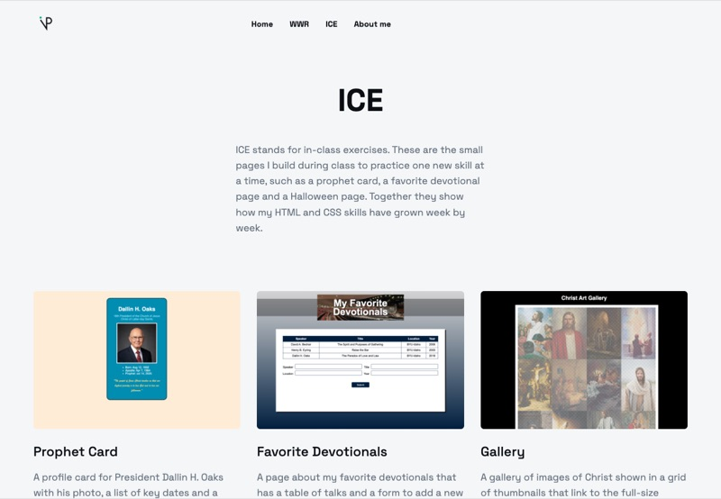

WWR
A website for Dry Oar Boating, a whitewater rafting company. It has a home page, a site plan and a contact page, and it is my first complete project built with HTML and CSS.
Hi, I'm Vinicius Paredes, a student at BYU-Idaho learning web development in WDD 130. This portfolio collects the projects and exercises I build in the course, from my first HTML pages to fully styled sites.


A website for Dry Oar Boating, a whitewater rafting company. It has a home page, a site plan and a contact page, and it is my first complete project built with HTML and CSS.

A collection of in-class exercises from the course, including a prophet card, a favorite devotional page and a Halloween page. Each one helped me practice a new HTML or CSS skill.
Learn more about me: where I come from, what I study at BYU-Idaho and why I enjoy building websites.